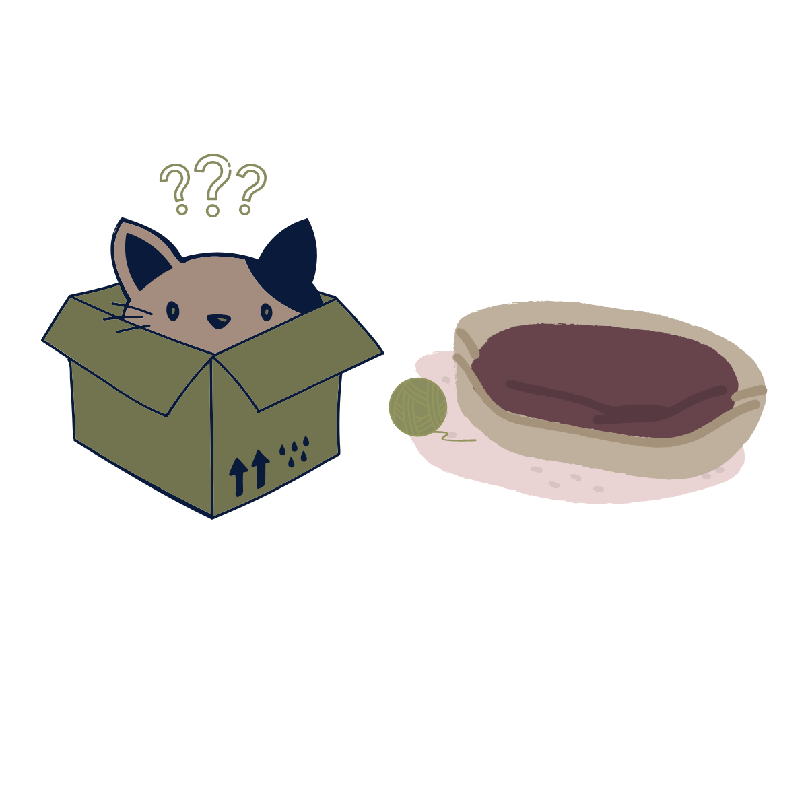

------------------ Now you are ready to live with Cats! Here are some tips that might help you! ------------------
How to Live with Cats
Give Your Cat Space
In a small apartment, it can be pretty hard for a cat to have privacy. However, even
the most social cat requires some time alone now and then, which is very relatable. An
enclosed kitty bed offers a comfortable area for your cat to hang out while still providing
a little shelter from humans, too.
Find a Perfect Place for you Cat's Litter Box
When it comes to feline litter, there are a lot of considerations. However, your main concerns might be smell
and mess in your apartment, but this greatly depends on where you put the litter box. The ideal places tend to be
the balcony or bathroom.
Provide Your Feline with Scratching Objects
Scratching is very healthy for your cat. Besides keeping the cat’s nails sharp and healthy, scratching helps
cats mark their territory. Their nail curves help them leave a chemical scent wherever they scratch, which is
why most cats will scratch on furniture even when they have a scratching post.
Clean the Litter Box Daily
Most pet owners, particularly those living in apartments, may get a bit lax with their home maintenance,
especially when it comes to litter boxes. However, if you are a cat owner living in a small apartment, you need
to be passionately cleaning your litter box at least once per day. That is hygienic and will also keep the odor
from spreading through your already limited space.
Sweep and Vacuum Often
Cats shed regardless of their fur height. You might not see it as much since they groom themselves regularly,
but their fur will accumulate on about everything. However, their hair becomes much more visible in small spaces
like apartments.
LIVING
with cats and their special needs

What to expect when living with cats
Care and Attention your cat need
As pets go, cats are relatively low maintenance compared to dogs which need companionship, walking, training etc.
However, like any pet, they do need care, and some cats need more care than others. Do you want to spend a lot of time
with your cat, do you want it to be demanding, or do you have limited time? Cats can fit into busy, modern lifestyles
more easily than dogs, as they are pretty independent, can be left alone much more easily and are more suitable for
smaller flats or houses. Cats are often chosen by people who have busy and stressful lifestyles and who want some
companionship when they go home to relax.
I'm Allergic to cats!
Many people think it’s a cat’s hair that causes us to react to them by sneezing, wheezing or itching. In fact it’s a protein or allergen
called Fd1, present in feline saliva, which causes the allergy. Because cats groom themselves regularly they have saliva all over their
coat. This dries on the coat and when the cat scratches, moves or brushes past objects the dust or dander and the hairs which contain the
allergen are spread about. Cat-lovers who really want to have a cat but are allergic sometimes think that by choosing a breed with less,
little or no coat they can avoid the problem. However, as it is saliva that causes the problem, this is unlikely to help, and although
longhaired cats do seem to cause more allergic reactions that’s probably only because, having more hair, they’re also covered with more
allergen.
Yes! They get sick too!
Keep an eye out for any coughing, sneezing, lethargy, or stomach upset in your new kitten. Young kittens are more
susceptible to getting sick since their immune system is still developing and their smaller size makes them more
susceptible to low blood sugar, dehydration, and other problems with missed meals and episodes of vomiting and/or
diarrhea. Make sure they are dewormed to protect them from intestinal parasites, and that they receive recommended
vaccines on time. Inform your veterinarian if you notice any symptoms.
 Care and Attention your cat need
Care and Attention your cat need